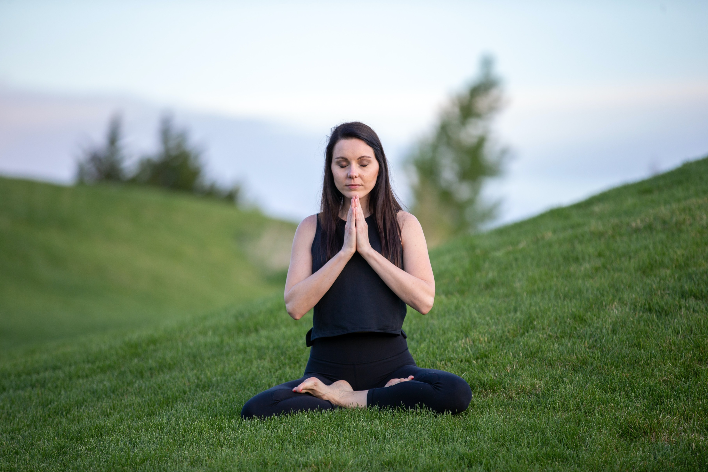

Why Exercise Is Wise

'Y'ou've probably heard countless times how exercise is "good for you." But did you know that it can help you feel good too? Getting the right amount of exercise can rev up your energy levels and even help improve your mood.
Rewards and Benefits
Experts recommend that teens get 60 minutes or more of moderate to vigorous physical activity each day. Here are some of the reasons: Exercise benefits every part of the body, including the mind. Exercising causes the body to make chemicals that can help a person feel good. Exercise can help people sleep better. It can also help some people who have mild depression and low self-esteem. Plus, exercise can give people a real sense of accomplishment and pride at having achieved a goal — like beating an old time in the 100-meter dash. Exercise helps people lose weight and lower the risk of some diseases. Exercising regularly lowers a person's risk of developing some diseases, including obesity, type 2 diabetes, and high blood pressure. Exercise also can help keep your body at a healthy weight. Exercise can help a person age well. This may not seem important now, but your body will thank you later. For example, osteoporosis (a weakening of the bones) can be a problem as people get older. Weight-bearing exercise — like jumping, running, or brisk walking — can help keep bones strong. The three parts of a balanced exercise routine are: aerobic exercise, strength training, and flexibility training.
Aerobic Exercise
Like other muscles, the heart enjoys a good workout. Aerobic exercise is any type of exercise that gets the heart pumping and gets you breathing harder. When you give your heart and lungs this kind of workout regularly, they get stronger and are better at getting oxygen (in the form of oxygen-carrying blood cells) to all parts of your body. If you play team sports, you're probably getting at least 60 minutes or more of moderate to vigorous activity on practice days. Some team sports that give you a great aerobic workout are basketball, soccer, lacrosse, hockey, and rowing. But if you don't play team sports, don't worry — there are plenty of ways to get aerobic exercise. These include biking, running, swimming, dancing, in-line skating, tennis, cross-country skiing, hiking, and walking quickly.
Strength Training
The heart isn't the only muscle to benefit from regular exercise. The other muscles in your body enjoy exercise too. When you use your muscles, they become stronger. Strong muscles are also a plus because they support your joints and help prevent injuries. Muscle also use more energy than fat does, so building your muscles will help you burn more calories and maintain a healthy weight. You don't have to lift weights to make your muscles and bones stronger. Different types of exercise strengthen different muscle groups, for example: For arms, try rowing or cross-country skiing. Pull-ups and push-ups, those old gym class standbys, are also good for building arm muscles. For strong legs, try running, biking, rowing, or skating. Squats and leg raises also work the legs. For abdominal and core strength, you can't beat rowing, yoga or pilates, planks and crunches.
Flexibility Training
Strengthening the heart and other muscles isn't the only important goal of exercise. Exercise can also help the body stay flexible, meaning that your muscles and joints stretch and bend easily. Being flexible may also help improve a person's sports performance. Some activities, like dance or martial arts, require great flexibility. But increased flexibility also can help people perform better at other sports, such as soccer or lacrosse. Sports and activities that encourage flexibility are easy to find. Martial arts like karate, ballet, gymnastics, and yoga are good choices. Stretching after your workout will also help you improve your flexibility.
What's Right for Me?
One of the biggest reasons people drop an exercise program is lack of interest: If what you're doing isn't fun, it's hard to keep it up. The good news is there are tons of different sports and activities to try to see which one inspires you. When picking the right type of exercise, it can help to consider your workout personality. For example, do you like to work out alone and on your own schedule? If so, solo sports like running, biking, or snowboarding could be for you. Or do you like the shared motivation and companionship that comes from being part of a team? School sports, intramural leagues, club teams, and pick-up games are great ways to stay active with others. You also need to plan around practical considerations, such as whether your chosen activity is affordable and available to you. (Activities like horseback riding may be harder for people who live in cities, for example.) You'll also want to think about how much time you can set aside for your sport. It's a good idea to talk to someone who understands the exercise, like a coach or fitness expert at a gym. He or she can get you started on a program that's right for you and your level of fitness. Doctors know that most people benefit from regular exercise, even those with disabilities or medical problems like asthma. If you have a health problem or other concern (like being overweight or very out of shape), talk to your doctor before beginning an exercise plan. Considering the benefits to the heart, muscles, joints, and mind, it's easy to see why exercise is wise. And the great thing about exercise is that it's never too late to start. Even small things can count as exercise when you're starting out — like taking a short bike ride, walking the dog, or raking leaves.
People Also Read:


Fitness Advice That Doesn't Work
‘Ignore bad fitness advice to make the most out of your time at the gym.”
7 Surprising Benefits of Exercise
‘'Y'ou probably have a vague sense that exercise is good for you—and you’ve probably heard that it’s “healthy for the heart.”’
The Mental Health Benefits of Exercise
‘'Y'ou already know that exercise is good for your body. But did you know it can also boost your mood, improve your sleep,’
Bite-sized exercise breaks
‘Exercise snacking differs from HIIT in both the duration of the activity burst and the time in between.’